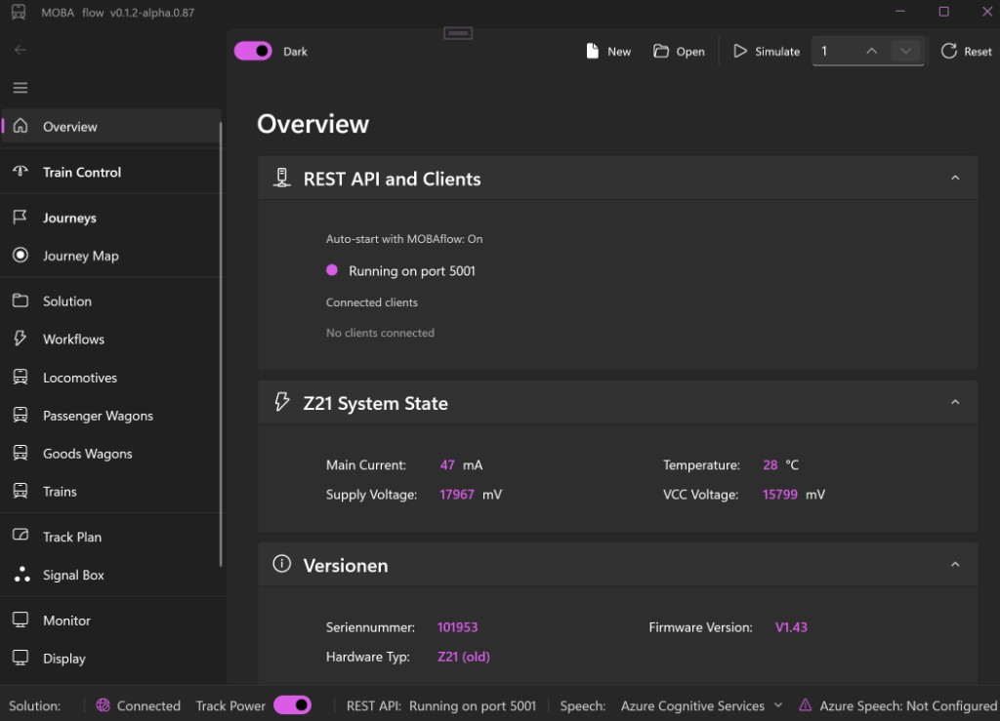

Z21 in Echtzeit
Direkte UDP-Kommunikation für Lokomotiven, Funktionen, Weichen und Rückmeldungen.
Direct UDPOpen Source · .NET 10 · Z21
MOBAflow verbindet Zugsteuerung, Fahrten, Workflows, Rückmeldungen, Ansagen und Gleisplanung zu einer durchgängigen Betriebszentrale.

Modellbahn trifft Softwarearchitektur
Eine lebendige Anlage besteht aus mehr als Geschwindigkeit und Richtung. MOBAflow denkt Betrieb als Zusammenspiel aus Fahrten, Ereignissen, Rückmeldern, Sprache, Displays und visueller Planung.
Architektur kennenlernen →Eine Plattform für den Anlagenbetrieb
Werkzeuge, die zusammenarbeiten – mit einer gemeinsamen Laufzeit und einem klaren Datenmodell.
Direkte UDP-Kommunikation für Lokomotiven, Funktionen, Weichen und Rückmeldungen.
Direct UDPMehrstufige Fahrten und wiederverwendbare Abläufe reagieren auf reale Anlagenereignisse.
Event-drivenGleise platzieren, verbinden, validieren und den Betriebszustand direkt sichtbar machen.
Win2DBahnhofsansagen und Sprachabläufe mit Piper TTS – lokal auf dem eigenen Rechner.
Offline TTSWindows-Zentrale, Android-Begleiter, REST-Schnittstelle und ESP32-Anzeigen.
Multi-hostGeteilte Domain-, Runtime- und UI-Schichten auf Basis moderner .NET-Architektur.
Clean ArchitectureDas MOBA-Ökosystem
Jede Anwendung hat eine klare Aufgabe. Gemeinsam greifen sie auf dieselben Modelle, Ereignisse und Laufzeitdienste zurück.
Technische ReferenzWindows-Betriebszentrale
Mobiler Fahrregler
Lokale Status- und Client-Brücke
Remote-Anzeigen auf der Anlage
Einblicke
Ein Klick öffnet die Ansichten in voller Größe.
Hinter dem Projekt
MOBAflow entsteht nicht im luftleeren Raum, sondern aus konkreten Betriebssituationen an der Anlage: Wie lassen sich Rückmeldungen verlässlich verarbeiten? Wie bleiben komplexe Fahrten verständlich? Und wie fühlt sich eine Steuerung an, die den Menschen unterstützt statt ihn zu überfordern?
„Ich entwickle MOBAflow offen und Schritt für Schritt – mit dem Anspruch, technische Tiefe und Freude am Modellbahnbetrieb zusammenzubringen.“
Einsteigen
Repository klonen, .NET 10 installieren und die passende Anwendung starten.
$ git clone https://github.com/ahuelsmann/MOBAflow.git
$ cd MOBAflow
$ dotnet build MOBAflow/MOBAflow.csproj